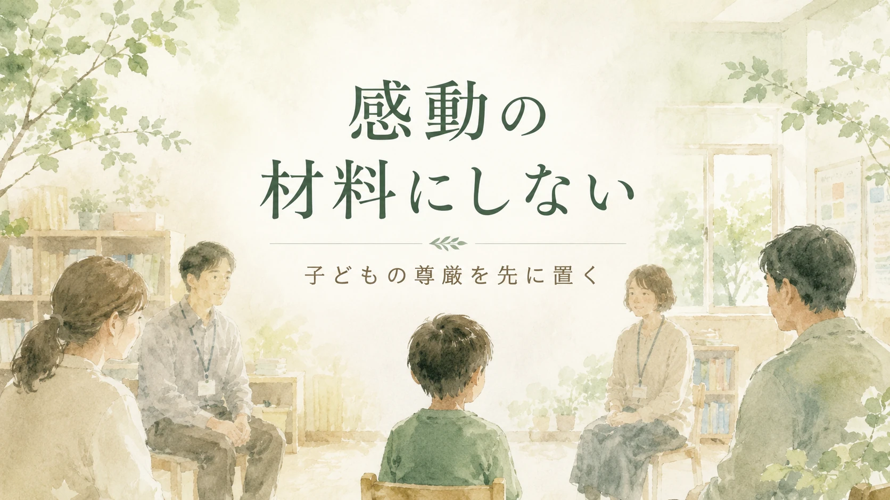

「障害のある子どもから、大切なことを教わりました」。支援者や教師が、そう語ることがあります。
その言葉そのものが、すべて悪いわけではありません。現場にいると、子どもとの関わりの中で、自分の見方が変わることがあります。
できる・できないだけで見ていたことに気づく。言葉にならない表情や反応の豊かさに気づく。支援しているつもりの自分が、逆に支えられていたことに気づく。そういう瞬間は、たしかにあります。
私自身も、特別支援教育の現場で、子どもたちから多くのことを受け取ってきました。
この記事で考えたいこと
子どもとの関わりから、支援者や保護者が何かを受け取ることはあります。けれど、その語りが、本人の生活や尊厳を置き去りにしていないか。そこを一度、立ち止まって考えます。
感動することと、感動の材料にすることは違う
子どもの成長に胸を打たれる。保護者が、わが子の小さな一歩に涙ぐむ。支援者が、何気ない表情に救われる。人と人が関われば、心が動くことはあります。
日々の支援や子育ては、きれいごとだけではありません。思うようにいかない日もあります。かかわり方に迷う日もあります。こちらの力不足を感じる日もあります。保護者も支援者も、疲れてしまうことがあります。
だから、心が動くこと自体を否定する必要はありません。
大切なのは、その心の動きをどう言葉にするかです。感動した自分を中心に書くのか。それとも、その子の生活や尊厳を中心に置くのか。ここで、文章の意味は大きく変わります。
「感動の材料」にするとは、どういうことか
障害のある子どもについて、「勇気をもらった」「自分も頑張らなきゃと思った」「この子たちは純粋だ」「生きているだけで尊い」と語られることがあります。
一見すると、温かい言葉に聞こえます。ただ、その言葉の中で、本人の生活が見えなくなっていることがあります。
- その子は、何に困っているのか。
- 何を嫌がっているのか。
- 何を選びたいのか。
- どんな支援が必要なのか。
- どんな場面で、本人の意思が見過ごされやすいのか。
そこを見ないまま、周囲の人が「感動した」「癒された」「勇気をもらった」と語る。このとき、中心にいるのは子ども本人ではなく、見ている側の気持ちになってしまいます。
それが、障害のある子どもを「感動の材料」にしてしまうということです。
子どもに役割を背負わせない
障害のある子どもは、誰かを感動させるために存在しているわけではありません。支援者を成長させるためにいるわけでもありません。社会に優しさを教えるために生まれてきたわけでもありません。
その子は、その子自身の人生を生きています。
好きなことがある。嫌なことがある。疲れる日がある。機嫌の悪い日がある。うまくいく日も、うまくいかない日もある。
そこにいるのは、「教材」でも「象徴」でもありません。一人の子どもです。
支援者が「この子との関わりで、自分の見方が変わった」と感じることはあります。ただし、それは、その子が支援者を変えるために存在していた、という意味ではありません。
変わったのは、支援者である自分です。その子に、こちら側の成長物語を背負わせない。ここは大事にしたいところです。
「かわいそう」と「すばらしい」は、どちらも危うい
障害のある子どもを語るとき、二つの極端があります。一つは、「かわいそう」と見ることです。もう一つは、「すばらしい存在」と持ち上げることです。
正反対に見えます。でも、どちらも本人を一人の子どもとして見ていない点では似ています。
「かわいそう」は、本人を欠けた存在として見ます。「すばらしい」は、本人を過剰に美化します。どちらも、その子の日常を見えにくくします。
朝起きる。ご飯を食べる。学校へ行く。疲れる。笑う。怒る。嫌がる。甘える。好きな遊びをする。人との関係に悩む。
支援で大切なのは、その子を低く見ないこと。そして同時に、高く飾りすぎないことです。一人の生活者として見る。ここが基本だと思います。
支援者が語るなら、自分の内省として書く
では、支援者は現場のことを何も語れないのでしょうか。私は、そうは思いません。
現場で得た学びを社会に伝えることには意味があります。特別支援教育や福祉の現場は、外から見えにくい。見えないままだと、誤解も偏見も残りやすい。支援の価値も、保護者の孤立も見えにくくなります。
ただし、語りの中心を間違えないことです。子どもを「感動の主人公」にするのではなく、支援者自身の内省として書く。
避けたい書き方
この子は、私に優しさを教えてくれました。
内省としての書き方
私は、その子との関わりを通して、自分が「分かりやすい反応」ばかりを求めていたことに気づきました。
避けたい書き方
この子の笑顔に救われました。
内省としての書き方
その表情を見たとき、私は支援を「成果」だけで見ていたのかもしれないと感じました。
子どもを材料にして支援者を美しく見せるのではなく、自分の見方がどう揺れたのかを書く。その方が、少し誠実です。
保護者が語るときも、子どもの未来の読み手を想像する
これは支援者だけの話ではありません。保護者がわが子のことを語るときにも、同じ慎重さが必要です。
わが子の困りごとを社会に伝えたい。同じ悩みを持つ家庭の助けになりたい。支援制度の必要性を知ってほしい。学校や地域に、もう少し理解してほしい。そう思って発信することはあります。
その気持ちは、とても自然です。保護者が声を上げることで、同じように悩んでいる家庭が救われることもあります。制度の足りなさが見えることもあります。周囲の理解が少し変わることもあります。
だから、保護者が語ること自体を否定したいわけではありません。
ただ、そのときにも、子ども本人が将来その文章を読んだらどう感じるか、という視点は持っておきたいのです。
「親としてつらかった」「家庭だけでは限界だった」「支援につながって助かった」。そうした保護者自身の経験を語ることには意味があります。
けれど、子どもの困りごと、失敗、パニック、家庭での荒れ、学校でのつまずきを細かく書きすぎると、子ども本人の尊厳を傷つけてしまうことがあります。
今は幼い子どもでも、いつか自分について書かれた文章を読むかもしれません。そのときに、「自分の生活や意思を大切にしながら書いてくれていた」と感じられるか。ここは大きな分かれ目です。
個人が特定されないかを確認する
支援者が現場の経験を書くとき、私はここをかなり大事にした方がよいと思っています。
その文章を、本人や保護者が読んでも傷つかないか。
名前を書かなければ大丈夫、と思う人もいるかもしれません。しかし、学校名、学年、障害の状態、家族構成、特徴的な行動、地域、時期、写真、エピソードが重なると、読む人によっては「あの子のことだ」と分かることがあります。
支援者にとっては、心に残った話かもしれません。でも、本人や家族にとっては、知らないところで生活の一部を語られたことになります。しかも、それが「いい話」として広がってしまう。これは、とても重いことです。
保護者は、わが子のことを「美談」として見てほしいわけではありません。一人の子どもとして、ていねいに見てほしい。そこを外してしまうと、どれだけ善意の文章でも、誰かを傷つけることがあります。
「癒された」と書くなら、慎重に補足する
支援者が「癒された」と感じることはあります。言葉にならないやりとり。何気ない表情。ゆっくりした時間。こちらが力を抜けた瞬間。そういうものに、支援者の方が救われることがあります。
ただし、「癒された」という言葉は慎重に扱う必要があります。そのまま書くと、子どもが支援者を癒すための存在に見えてしまうことがあるからです。
私は、その子との関わりの中で、癒されたと感じる瞬間がありました。ただし、それはその子が私を癒すために存在しているという意味ではありません。
その子の日々には、しんどさも、意思も、思うようにいかない時間もありました。そのうえで、支援しているつもりの私が、関わりの中で何かを受け取っていた。そういう意味です。
短く美しい言葉ほど、危ういことがあります。「癒された」も、その一つです。
書く前に確認したいこと
書く前のチェック
- 本人や保護者が読んでも傷つかないか。
- 子ども本人が将来読んでも、尊厳が守られているか。
- 学校名、地域、時期、写真、特徴的な行動から個人が特定されないか。
- 子どもを「かわいそう」「天使」「奇跡」として扱っていないか。
- 支援者や保護者である自分を美しく見せる文章になっていないか。
- 困りごとを必要以上に詳しく書いていないか。
- その子の意思や生活が置き去りになっていないか。
- 読む人の感動より、本人の尊厳を優先しているか。
このチェックをすると、書けることは少し減ります。でも、それでよいのだと思います。書けることを全部書く必要はありません。語らないことで守れるものもあります。
社会に伝えるべきことは、別にある
障害のある子どものことを語るとき、本当に社会に伝えるべきことは何でしょうか。
私は、感動的なエピソードだけではないと思います。むしろ、次のようなことこそ伝える必要があります。
- 支援には人手が必要であること。
- 合理的配慮は特別扱いではないこと。
- 子どもの困り感は、本人の努力不足ではないこと。
- 家庭だけで抱えるには限界があること。
- 学校、福祉、医療、地域がつながる必要があること。
- 支援者にも学びと研修が必要であること。
- 本人の意思を尊重することが大切であること。
こうしたことを伝えるために、現場の経験を使う。それなら、語る意味があります。
読者を泣かせるために子どもの姿を使うのではなく、支援の見方を少し変えるために経験を差し出す。そこに線を引きたいのです。
語るなら、本人の尊厳を先に置く
障害のある子どもを「感動の材料」にしないために必要なのは、特別な技術ではありません。
まず、その子を一人の人として見ることです。かわいそうな存在にしない。特別に美しい存在として飾りすぎない。支援者を成長させるための存在にしない。保護者の苦労を伝えるためだけの存在にしない。読者を感動させるための素材にしない。
その子には、その子の生活があります。意思があります。好き嫌いがあります。疲れもあります。怒りもあります。選びたいこともあります。
支援者や保護者が語るなら、その尊厳を先に置く。自分が何を受け取ったかを書くとしても、子どもに役割を背負わせない。自分がどれだけ大変だったかを書くとしても、子どもの生活を必要以上にさらさない。
現場の経験や家庭の経験を語ることには意味があります。でも、語る前に一度立ち止まりたい。
この文章は、その子を守っているか。
それとも、その子を使っているか。
その問いを持つことが、子どもについて書くすべての大人に必要なのだと思います。